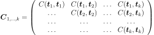

ARMA¶
(Source code, png, hires.png, pdf)
{kind=link}
{kind=link}
-
class
ARMA(*args)¶ ARMA process.
Refer to ARMA stochastic process.
- Available constructors:
ARMA()
ARMA(ARCoeff, MACoeff, whiteNoise)
ARMA(ARCoeff, MACoeff, whiteNoise, ARMAstate)
- Parameters
- ARCoeff
ARMACoefficients The coefficients of the AR part of the recurrence : in dimension 1 and in dimension
 .
.Default is:
 in dimension 1 and the associated time grid is
in dimension 1 and the associated time grid is  .
.- MACoeff
ARMACoefficients The coefficients of the MA part of the recurrence : in dimension 1 and in dimension
.Default is:
in dimension 1 and the associated time grid is .- whiteNoise
WhiteNoise The white noise distribution of the recurrent relation.
Default is: the Normal distribution with zero mean and unit variance in dimension 1.
- ARMAstate
ARMAState The state of the ARMA process which will be extended to the next time stamps. The state is composed with
 values of the process and
values of the process and  values of the white noise. This constructor is needed to get possible futurs from the current state.
values of the white noise. This constructor is needed to get possible futurs from the current state.
- ARCoeff
Notes
An ARMA process in dimension
is defined by the linear recurrence :where and .
In dimension 1, an ARMA process is defined by:
where .
Examples
Create an ARMA(4,2) process:
>>> import openturns as ot >>> myTimeGrid = ot.RegularGrid(0.0, 0.1, 10) >>> myWhiteNoise = ot.WhiteNoise(ot.Triangular(-1.0, 0.0, 1.0), myTimeGrid) >>> myARCoef = ot.ARMACoefficients([0.4, 0.3, 0.2, 0.1]) >>> myMACoef = ot.ARMACoefficients([0.4, 0.3]) >>> myARMAProcess = ot.ARMA(myARCoef, myMACoef, myWhiteNoise)
>>> myLastValues = ot.Sample([[0.6], [0.7], [0.3], [0.2]]) >>> myLastNoiseValues = ot.Sample([[1.2], [1.8]]) >>> myARMAState = ot.ARMAState(myLastValues, myLastNoiseValues) >>> myARMAProcessWithState = ot.ARMA(myARCoef, myMACoef, myWhiteNoise, myARMAState)
Generate a realization:
>>> myTimeSeries = myARMAProcess.getContinuousRealization()
- Attributes
thisownThe membership flag
Methods
computeNThermalization(epsilon)Accessor to the stored state of the ARMA process.
Accessor to the AR coefficients of the ARMA process.
Accessor to the object’s name.
Get a continuous realization.
Accessor to the covariance model.
Get the description of the process.
getFuture(*args)Get possible futures from the current state of the ARMA process.
getId()Accessor to the object’s id.
Get the dimension of the domain
 .
.Accessor to the MA coefficients of the ARMA process.
getMarginal(*args)Get the
 marginal of the random process.
marginal of the random process.getMesh()Get the mesh.
Accessor to the number of time stamps used to thermalize the process.
getName()Accessor to the object’s name.
Get the dimension of the domain
.Get a realization of the process.
getSample(size)Get
 realizations of the process.
realizations of the process.Accessor to the object’s shadowed id.
getState()Accessor to the stored state of the ARMA process.
Get the time grid of observation of the process.
getTrend()Accessor to the trend.
Accessor to the object’s visibility state.
Accessor to the white noise defining the ARMA process.
hasName()Test if the object is named.
Test if the object has a distinguishable name.
Test whether the process is composite or not.
isNormal()Test whether the process is normal or not.
Test whether the process is stationary or not.
setDescription(description)Set the description of the process.
setMesh(mesh)Set the mesh.
Accessor to the number of time stamps used to thermalize the process.
setName(name)Accessor to the object’s name.
setShadowedId(id)Accessor to the object’s shadowed id.
setState(state)Accessor to the stored state of the ARMA process.
setTimeGrid(timeGrid)Set the time grid of observation of the process.
setVisibility(visible)Accessor to the object’s visibility state.
setWhiteNoise(whiteNoise)Accessor to the white noise defining the ARMA process.
-
__init__(*args)¶ Initialize self. See help(type(self)) for accurate signature.
-
computeNThermalization(epsilon)¶ Accessor to the stored state of the ARMA process.
- Parameters
- epsfloat,
- Returns
- Ntherint,
The number of iterations of the ARMA process before being stationary and independent of its initial state.
Notes
The thermalization number is defined as follows:
where is the integer part of a float and the are the roots of the polynomials (given here in dimension 1) :
-
getARCoefficients()¶ Accessor to the AR coefficients of the ARMA process.
- Returns
- ARCoeff
ARMACoefficients The AR coefficients of the linear recurrence defining the process.
- ARCoeff
-
getClassName()¶ Accessor to the object’s name.
- Returns
- class_namestr
The object class name (object.__class__.__name__).
-
getContinuousRealization()¶ Get a continuous realization.
- Returns
- realization
Function According to the process, the continuous realizations are built:
either using a dedicated functional model if it exists: e.g. a functional basis process.
or using an interpolation from a discrete realization of the process on
 : in dimension
: in dimension  , a linear interpolation and in
dimension
, a linear interpolation and in
dimension  , a piecewise constant function (the value at a
given position is equal to the value at the nearest vertex of the mesh of
the process).
, a piecewise constant function (the value at a
given position is equal to the value at the nearest vertex of the mesh of
the process).
- realization
-
getCovarianceModel()¶ Accessor to the covariance model.
- Returns
- cov_model
CovarianceModel Covariance model, if any.
- cov_model
-
getDescription()¶ Get the description of the process.
- Returns
- description
Description Description of the process.
- description
-
getFuture(*args)¶ Get possible futures from the current state of the ARMA process.
- Parameters
- Nitint,
The number of time stamps of the future.
- Nrealint,
The number of possible futures that are generated.
Default is: .
Notes
If :
- A
TimeSeries One possible future of the ARMA process, from the current state over the next time stamps.
If :
- A
ProcessSample possible futures of the ARMA process, from the current state over the next time stamps.
Note that the time grid of each future begins at the last time stamp of the time grid associated to the time series which is extended.
-
getId()¶ Accessor to the object’s id.
- Returns
- idint
Internal unique identifier.
-
getInputDimension()¶ Get the dimension of the domain
.- Returns
- nint
Dimension of the domain
: .
-
getMACoefficients()¶ Accessor to the MA coefficients of the ARMA process.
- Returns
- MACoeff
ARMACoefficients The MA coefficients of the linear recurrence defining the process.
- MACoeff
-
getMarginal(*args)¶ Get the
marginal of the random process.- Parameters
- kint or list of ints

Index of the marginal(s) needed.
- kint or list of ints
- Returns
- marginals
Process Process defined with marginal(s) of the random process.
- marginals
-
getNThermalization()¶ Accessor to the number of time stamps used to thermalize the process.
- Returns
- Ntherint,
The number of time stamps used to make the ARMA realization be independent from its actual state.
Default precision is: .
-
getName()¶ Accessor to the object’s name.
- Returns
- namestr
The name of the object.
-
getOutputDimension()¶ Get the dimension of the domain
.- Returns
- dint
Dimension of the domain
.
-
getRealization()¶ Get a realization of the process.
- Returns
- realization
Field Contains a mesh over which the process is discretized and the values of the process at the vertices of the mesh.
- realization
-
getSample(size)¶ Get
realizations of the process.- Parameters
- nint,

Number of realizations of the process needed.
- nint,
- Returns
- processSample
ProcessSample - realizations of the random process. A process sample is a
collection of fields which share the same mesh
 .
.
- processSample
-
getShadowedId()¶ Accessor to the object’s shadowed id.
- Returns
- idint
Internal unique identifier.
-
getState()¶ Accessor to the stored state of the ARMA process.
- Returns
- ARMAstate
ARMAState The state of the ARMA process which will be extended to the next time stamps. The state is composed with
values of the process and values of the white noise.
- ARMAstate
-
getTimeGrid()¶ Get the time grid of observation of the process.
- Returns
- timeGrid
RegularGrid Time grid of a process when the mesh associated to the process can be interpreted as a
RegularGrid. We check if the vertices of the mesh are scalar and are regularly spaced in but we don’t check if the connectivity of the mesh is conform
to the one of a regular grid (without any hole and composed of ordered
instants).
but we don’t check if the connectivity of the mesh is conform
to the one of a regular grid (without any hole and composed of ordered
instants).
- timeGrid
-
getTrend()¶ Accessor to the trend.
- Returns
- trend
TrendTransform Trend, if any.
- trend
-
getVisibility()¶ Accessor to the object’s visibility state.
- Returns
- visiblebool
Visibility flag.
-
getWhiteNoise()¶ Accessor to the white noise defining the ARMA process.
- Returns
- whiteNoise
WhiteNoise The white noise
 used in the linear recurrence of the ARMA process.
used in the linear recurrence of the ARMA process.
- whiteNoise
-
hasName()¶ Test if the object is named.
- Returns
- hasNamebool
True if the name is not empty.
-
hasVisibleName()¶ Test if the object has a distinguishable name.
- Returns
- hasVisibleNamebool
True if the name is not empty and not the default one.
-
isComposite()¶ Test whether the process is composite or not.
- Returns
- isCompositebool
True if the process is composite (built upon a function and a process).
-
isNormal()¶ Test whether the process is normal or not.
- Returns
- isNormalbool
True if the process is normal.
Notes
A stochastic process is normal if all its finite dimensional joint distributions are normal, which means that for all
 and
and
 , with
, with  , there is
, there is
 and
and
 such that:
such that:
where
 ,
,
 and
and
 and
and
 is the symmetric matrix:
is the symmetric matrix:
A Gaussian process is entirely defined by its mean function
 and its
covariance function
and its
covariance function  (or correlation function
(or correlation function  ).
).
-
isStationary()¶ Test whether the process is stationary or not.
- Returns
- isStationarybool
True if the process is stationary.
Notes
A process
 is stationary if its distribution is invariant by
translation:
is stationary if its distribution is invariant by
translation:  ,
,
 ,
,
 , we have:
, we have:
-
setDescription(description)¶ Set the description of the process.
- Parameters
- descriptionsequence of str
Description of the process.
-
setNThermalization(n)¶ Accessor to the number of time stamps used to thermalize the process.
- Parameters
- Ntherint,
The number of time stamps used to make the ARMA realization independent from its actual state.
-
setName(name)¶ Accessor to the object’s name.
- Parameters
- namestr
The name of the object.
-
setShadowedId(id)¶ Accessor to the object’s shadowed id.
- Parameters
- idint
Internal unique identifier.
-
setState(state)¶ Accessor to the stored state of the ARMA process.
- Parameters
- ARMAstate
ARMAState The state of the ARMA process which will be extended to the next time stamps. The state is composed with
values of the process and values of the white noise.
- ARMAstate
-
setTimeGrid(timeGrid)¶ Set the time grid of observation of the process.
- Returns
- timeGrid
RegularGrid Time grid of observation of the process when the mesh associated to the process can be interpreted as a
RegularGrid. We check if the vertices of the mesh are scalar and are regularly spaced in but we don’t check if the connectivity of the mesh is conform
to the one of a regular grid (without any hole and composed of ordered
instants).
- timeGrid
-
setVisibility(visible)¶ Accessor to the object’s visibility state.
- Parameters
- visiblebool
Visibility flag.
-
setWhiteNoise(whiteNoise)¶ Accessor to the white noise defining the ARMA process.
- Parameters
- whiteNoise
WhiteNoise The white noise
used in the linear recurrence of the ARMA process.
- whiteNoise
-
thisown¶ The membership flag